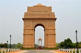

Profile
India Gate, formerly known as the All India War Memorial, is a prominent war memorial situated on the eastern edge of the ceremonial axis of New Delhi, India, officially known as Kartavya Path. Wikipedia
Location: Rajpath Near
Connaught Place New Delhi,
New Delhi 110001 India
Latitude: 28.61282
Longitude: 77.23108
Local Time: 1:17 PM IST,
Thursday
Build Start Date: February 10, 1921
Architect: Edwin Lutyens